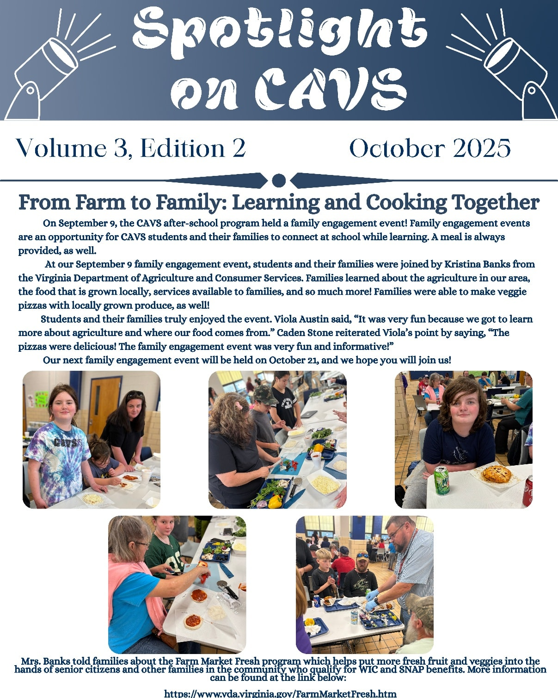
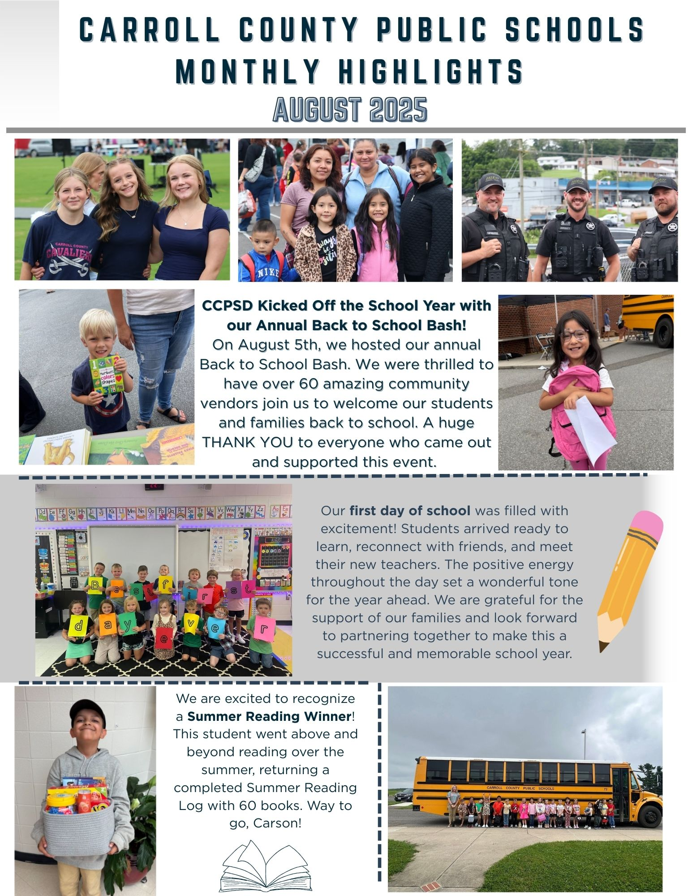
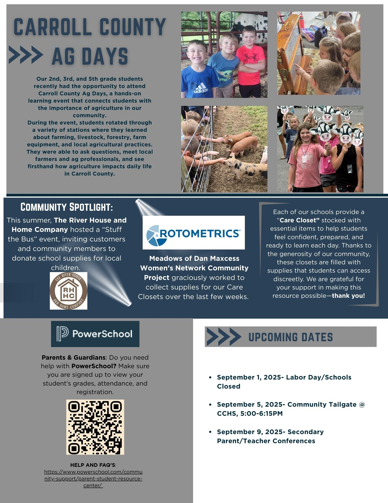

Cohort 1 📍 Region 7
Carroll County brought twenty years of experience partnering with its local community to the Community Schools work. The Schools and Pools program with Carroll Wellness Center has been bringing water safety education to students since 2004. Through the Community Schools grant, the division formalized that work, adding a dedicated coordinator hired from the local community and expanding existing partnerships.
A community advisory board with parent voice guides the work across eight schools, which centers on expanding mental health interventions and reducing disciplinary referrals. The division is already building beyond the grant period, applying for additional 21st Century Community Learning Centers funding to sustain programming across the division.
Division-wide Mental Health and Behavior Goals
15%+ Mental Health Interventions | -5% Discipline Referrals
Carroll County exemplifies VCSI Stage 2.1: Organize a Community School Team. Carroll County has designated a coordinator to oversee its Community Schools' action plans and activities.
"Our Community Schools initiative has strengthened partnerships between schools, families, and local organizations, resulting in improved student attendance and engagement. We have increased the resources and targeted interventions provided to students, staff and the community. Through family events, resource connections, and expanded enrichment opportunities, we've seen increased parent participation and stronger home–school relationships."
— Emily Underwood, Community Schools Coordinator
Students are gaining hands-on automotive learning by completing manageable repairs and maintenance on the vehicles used for a new Non-Emergency Medical Transportation program, run in partnership with Tri-Area Community Health. The program transports uninsured and Medicaid-enrolled patients to medical and behavioral health appointments at the Cana and Laurel Fork clinics.

The Cohort After-school and Vocational Services (CAVS) Program at Carroll County Middle, funded through 21st Century Community Learning Centers, runs experiential learning and family events throughout the year. The Farm to Family event brought students and families together with Virginia Department of Agriculture staff to make veggie pizzas from locally grown food and learn about available nutrition programs including Farm Market Fresh. CAVS also runs academic field trips, including a surface collection and gem panning trip to Emerald Hollow Mine for earth science instruction.

The annual Back to School Bash welcomed students and families with more than 60 community vendors in a single gathering. The event serves as a district-wide celebration of the start of school, connecting families to service providers, local businesses, and health organizations before the first day of classes.

Agriculture Days connected students with local farmers and agricultural professionals through County AG Day, where second, third, and fifth graders attended stations on farming, livestock, forestry, and farm equipment. The same newsletter features the division's Care Closets initiative, which allows students to access school supplies and clothing discreetly at each school. Community partners supporting the Care Closets include The River House, Meadows of Dan Maxcess Women's Network, and Rotometrics.
{kind=link}
{kind=link}
{kind=link}